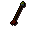

Rune arrow(p)

| Config name | rune_arrow_p |
| Item id | 893 |
| Value | 400 gp |
| Weight | 16g |
| Members | Yes |
| Tradeable | Yes |
| Stackable | Yes |
| Equip slot | quiver |
| Options | Wield |
| Category | arrows |
| Level required | 40 |
| Defined in | scripts/skill_combat/configs/ranged/arrows.obj |
| Equipment stats | Ranged str 49 |
Rune arrow(p)
Venomous looking arrows.